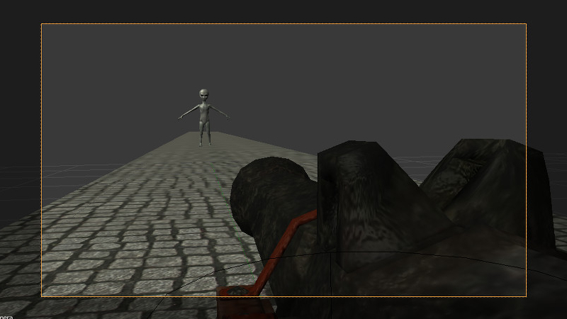

Non-Linear Animation¶
NLA Editor¶
The Blender’s non-linear editor lets us set the scene’s behavior in a comfortable way. With its help we can implement simple scenarios. This way coding is not needed for simple scenes and applications.
{kind=link}
The engine supports controlling the following entities:
Any animation the parameters of which can be presented with Actions
Audio playback
Particles emission (in the form of a connection with the global timeline)
{kind=link}
Usage¶
Activate the
NLApanel under theScenetab.In the
NLA Editorset up the required behavior for the scene.Choose the animation time interval on the
Timelinepanel.
Additional settings¶
The NLA > Cyclic NLA scene setting activates the cyclic NLA animation mode.
Note
In order to use vertex animation, enable “Allow NLA” option on the vertex animation panel.
Limitations¶
A simultanious playback of differnet types of animation for the same object is not supported.
Controlling via API¶
Non-linear animation playback can be controlled via API methods of the nla.js module.
// ...
var m_nla = require("nla");
// ...
m_nla.set_frame(150);
// ...
var frame = m_nla.get_frame();
// ...
m_nla.play();
// ...
m_nla.stop();
// ...
Please note, that if the Logic Editor is used, the set_frame, play, stop methods are not available.